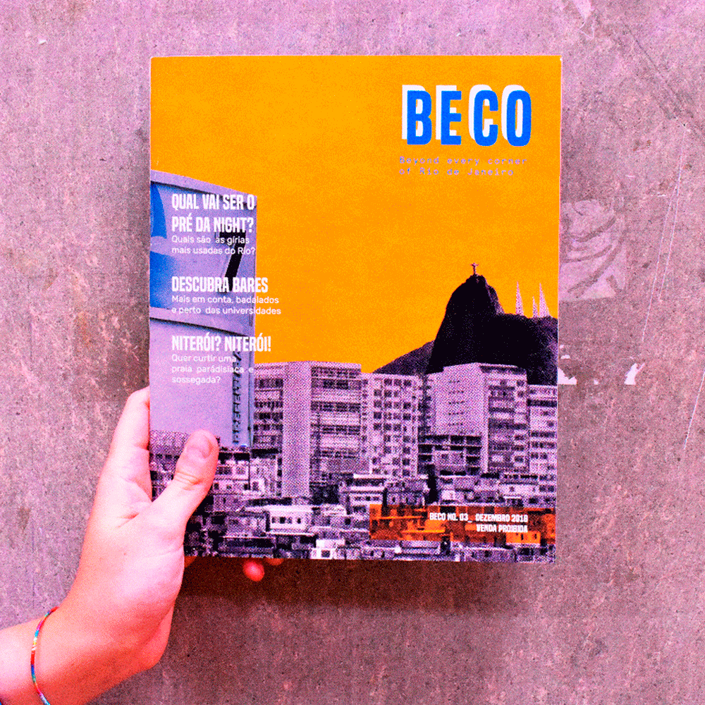

BECO
Behind Every Corner Of...
Editorial project for a magazine about the hidden sides of brazilian metropolises, offering to
a public of expats and exchange students an alternative view on its habits, cool places and traditions.
The inspiration for the visual style comes from the colorful and spontaneous world of fanzines.
The inspiration for the visual style comes from the colorful and spontaneous world of fanzines.
